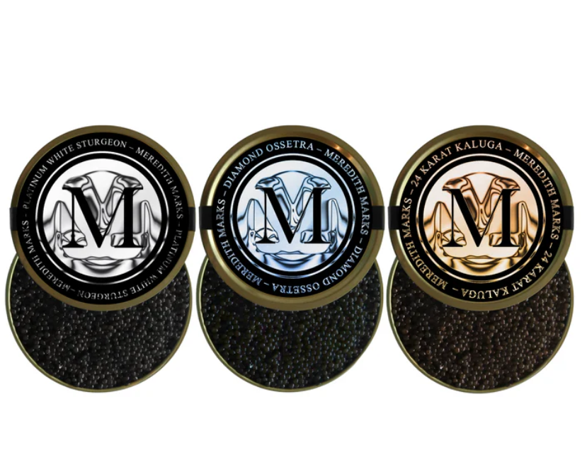

Trusted Partners & Purveyors
The quality of every meal I create starts with the quality of each ingredients. I'm honored to partner with these business who share my commitment to freshness and exceptional flavor.

Meredith Marks Caviar
For those moments that call for pure luxury, Meredith Marks provides the highest quality caviar, perfect for elevating any special occasion or just treating yourself.
Visit WebsiteSitka Seafood Market
Sitka Seafood is Committed to sustainable, wild-caught seafood from the pristine waters of Alaska. Their dedication to quality makes them my go-to for all seafood.
Visit Website